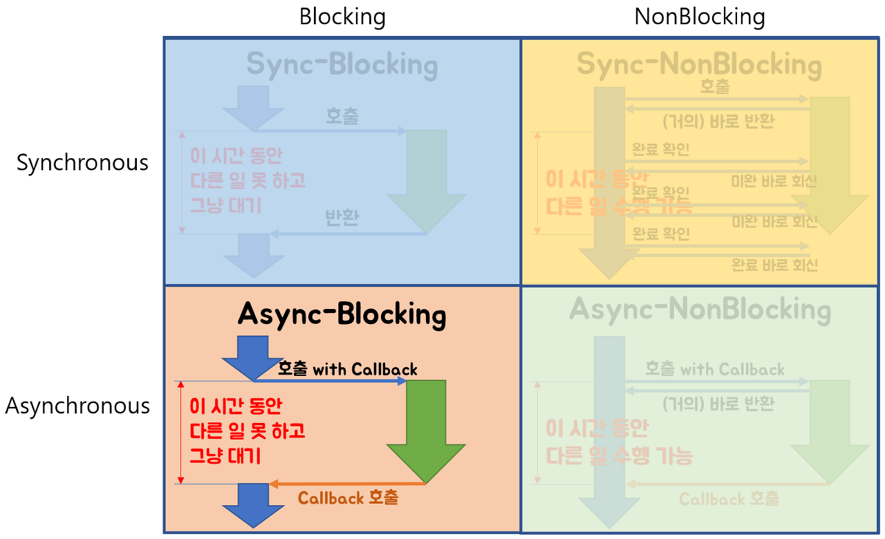

현재의 단계
현재까지 version1 실시간 채팅방 구현을 위한 STOMP/Spring 연동이 완료되었다. 상세한 내용과 코드는 다음의 github 링크에서 확인할 수 있다.
- GITHUB : https://github.com/ghkdqhrbals/spring-chatting-server/tree/v1
- v1 동작 : https://www.youtube.com/watch?v=nwD3AX6CJcc
하지만 여전히 미비한 기능들
부족한 장애대응
Kafka를 사용하기 이전에는 아래와 같이 데이터를 주고받는것을 목표로 하였었다.
Kafka 이전에 고려했던 점
- 프론트에서 WebClient를 사용해서 RestApi호출할 때, Spring의 WebClient를 비동기 + Non-Blocking으로 설계할 것. 이렇게 되면 순서는 다음과 같음.
- 프론트에서 @Async어노테이션으로 비동기 private 함수 호출(이때, websocket으로
진행중표시) - 비동기 함수에서 webClient를 .subscribe(result-> hashset… )로 non-blocking설정하고 restapi들(하나의 api를 호출하는 것은 non-blocking의미가 없다. 호출이 여러개여야지 한방에 다 보내고 wait으로 기다릴 떄, 성능향상을 기대할 수 있기때문)을 호출하고 wait
- 비동기함수 내 webClient의 response가 도착하면 websocket으로 데이터 표시
- 프론트에서 @Async어노테이션으로 비동기 private 함수 호출(이때, websocket으로
하지만 이렇게 설계한다면, 백엔드 서버가 죽었을 때 다른 서버로 누가 대신 요청을 옮겨줄 수가 없다!
- 프론트에서 WebClient를 사용해서 RestApi호출할 때, Spring의 WebClient를 비동기 + Non-Blocking으로 설계할 것. 이렇게 되면 순서는 다음과 같음.
부족한 확장성
서비스를 수평적으로 확장하는데 있어 부족함을 느꼈다.
Client -- Server -- DB인 단순한 구조였기에 서버가 웹소켓 관리 + 비즈니스 로직수행 + DB 관리 + 로그기록이기에 부하가 많았고, Server를 늘렸을 때 DB sync를 맞추기 힘들다.로그기록 저장 부하 발생
로그기록은 바로바로 처리하지 않아도 된다. 그러니까 실제로 로그를 저장하는 시점을 보장하지 않아도 된다. 하지만, 기존의 구조에서는 바로바로 처리하는 구조이기에 부하가 발생했다.
그렇다면 필자는 어떤식으로 보완해야할까? = Kafka 사용
장애 대응 용이
Kafka는 장애대응이 용이하다. 특정 서버가 죽었을 때, 다른 서버가 데이터를 받아서 처리하도록 설정가능하다. 이는 Kafka가 죽었을 때도 마찬가지이다. 카프카 클러스터 내 특정 데이터 큐(topic-partition)을 도맡아(leader partition) 처리하는 카프카 서버(broker)가 죽어도 다른 카프카 서버 내 싱크된 큐(follow partition)가 대신해서 처리하도록 대장 카프카 서버(controller broker)가 장애를 대응해준다. 이 대장 카프카 서버는 zookeeper에 의해 선정/관리된다.
확장성 용이
카프카는 ConsumerGroup이 데이터(topic)와 매칭되어 데이터를 받을 수 있도록 도와준다. ConsumerGroup은 쉽게 생각해서 같은 기능의 서버(Consumer)를 수평적으로 확장해놓은 집합이라고 생각하면 된다. 그리고 이러한 ConsumerGroup내 서버(Consumer)들 중 하나가 죽으면, 그 서버에서 처리하던 특정 데이터(topic-partition)들을 다른 서버가 이어받아 처리하도록 도와준다.
메세지 큐로써의 장점보유
카프카는 메세지 큐이다. 메세지 큐는 작업요청의 수행시점을 고려하지 않은 아키텍쳐이다. 이를 제대로 활용가능한 예로 어뷰저 관측을 들 수 있다. 어뷰저 관리는 부가기능으로, 채팅앱 유저가 실시간으로 알 필요가 없다. 따라서 서버는 메세지 큐에 채팅기록들을 넣어놓고 천천히 어뷰저 관측기능을 수행하면서 이후 어뷰저 발견 시, 유저에게 알람하는 식으로 처리할 수 있다.
즉, 데이터의 백본역할을 수행하는 Kafka를 통해 장애대응과 확장성 및 부가기능수행에서 이점을 가져갈 수 있다.
어떤식으로 Kafka를 implement해야할까?
일단 Kafka의 topic은 stomp처럼 많이 생성할 수 없다. 이는 broker수만큼 topic의 replica를 감당해야하며, 모든 topic들의 partition(ISR-InSync-Replica)들은 follow partition들과 sync과정을 가지기 때문에 각기 broker에 걸리는 부하는 (총 broker개수)(topic개수partition개수) 이상이다. 즉, topic 개수에 limit에 존재한다. 무작정 chat.room.10 이런식으로 채팅방 별 topic을 설정할 수 없다는 것이다. 따라서 클라이언트가 직접 publish/consume할 수 없다.
Is There a Limit on the Number of Topics in a Kafka Instance?
그렇다면 이상적인 kafka 통신방법은 무엇일까?
먼저 서버의 위치부터 정리해보자
- client : port:8080
- kafka 서버 : port:9092, port:9093
- chat Front Server : port:8081 - (기능 : 세션/인증관리/웹소켓 관리, 에러처리) - Confluent Rest Proxy와 같은 역할
Confluent Rest Proxy : 카프카를 사용하지 못하는 클라이언트 환경을 고려해 POST는 Producer로, GET은 Consumer로 HTTP를 Kafka와 매칭시켜주는 기술 or 플랫폼
- chat Backend Server : port:8083, port:8084 - (기능 : DB관리, restapiServer, 비즈니스로직수행) consumerGroup:groupId=chat
Kafka 통신순서 예시(로컬에서의 채팅방 입장 및 채팅전송)
- 채팅방 입장
- 클라이언트는 chat Front Server에
GET localhost:8081/chat/{roomId}요청. 클라이언트는 비동기로 해당 요청을 실행하며, webclient의 .subcribe()으로 non-blocking 실행한다. (Asnyc-NonBlocking은 아래 참조)  reference : Blocking-NonBlocking-Synchronous-Asynchronouslocalhost:8081은 이를 받고kakao.chat.chatRoom.REQUEST토픽으로localhost:9092에 메세지를 put한다. { “userId”:”HwangboGyumin”, “roomId”:10 }kakao.chat.chatRoom.REQUEST토픽 내 실제 메세지가 삽입된 leader partition을 구독중인 Consumerlocalhost:8083은 메세지를 소비한다.localhost:8083은 로직 수행하여 DB에서 이전 채팅목록을kakao.chat.chatRoom.RESPONSE토픽으로localhost:9092에 메세지를 put한다.
localhost:8081은 해당 메세지를 소비하여 클라이언트에 이전채팅목록 반환
- 채팅전송
- 클라이언트는 이전 채팅방 접속 시 반환받은 “endpoint”:
ws://localhost:8081/stomp/chat주소에 웹소켓을 연결한다.- 연결성공 이후,
POST localhost:8081/chat/{roomId}로 chatMessage를 전송한다.localhost:8081은 이를 수신받고 먼저localhost:9092에kakao.chat.chatMessage.REQUEST토픽으로 전달한다.kakao.chat.chatMessage.REQUEST토픽 내 실제 메세지가 삽입된 leader partition을 구독중인 Consumerlocalhost:8083은 메세지를 소비한다.localhost:8083은 로직 수행하여 DB에 chatMessage 저장 및kakao.chat.chatMessage.RESPONSE에 성공여부 메세지를 put한다.localhost:8081은kakao.chat.chatMessage.RESPONSE토픽에 저장된 메세지를 소비하여 chatMessage DB저장 성공 여부를 판단한다.- 제대로 저장되었다면,
localhost:8081에서 stomp.send(topic:/pub/chat/room/{roomId})로 chatMessage를 publish한다.- 클라이언트는 아래와 같이 해당 토픽을 웹소켓을 통해 수신받고 있기에 화면에 채팅이 표시된다.
현재의 프로젝트에 Kafka를 연동함으로써 예상되는 장점요약
- 서버 수평확장에 있어 DB Sync 설정가능(Kafka Connect의 CDC)
Kafka Connect : 트랜젝션 로그들로 sync하기에 ACID 보장가능
- 서버 다운 시 대처가능
kafka의 zooKeeper에서 변화감지 및 Consumer 변경 가능함으로써 서버다운대처가능
- 부가기능들 자유롭게 수행가능
메세지의 실시간 처리가 필요없는 부가기능들 = 응답 안기다려도 되는 기능
ex) 어뷰저 관측, 로그저장
추가할 작업
- Chatting 메세지를 저장하는 Repository 추가
고려할 점
- 사용자가 마지막에 읽은 채팅의 위치를 저장하는 칼럼 추가
- 지금 채팅방에 입장할때마다 입장메세지가 표시된다. 이것을 삭제하고 입장메세지의 토픽인 /pub/chat/enter의 핸들러를 거칠때마다 마지막 읽은 메세지의 위치 표시(반환)
- 카카오의
톡서랍처럼 나한테 중요한 메세지들을 채팅방,채팅메세지,시간 이렇게 저장할 수 있도록 중요메세지 저장 테이블 추가
- Room/Participant 제거기능 추가
- User가 삭제되었을 때, 연관된 데이터 삭제하도록 데이터 흐름 관찰(JPA실제 쿼리문 관찰)
- Kafka 설정
- UserServer/FriendServer/ChattingServer 전부 따로 떼서 Kafka를 통해 서로 메세지를 주고받도록 설정
고려할 점
- Partition + Broker 추가
- Docker-compose로 Kafka/DB/Spring 구동 편리성 도모
- Spring 서버 다운 시, 대책마련
- 메시지가 소비될 떄, 멱등성 고려해야함
- ElasticSearch LoggingServer 추가
- UserServer/FriendServer/ChattingServer 전부 따로 떼서 Kafka를 통해 서로 메세지를 주고받도록 설정